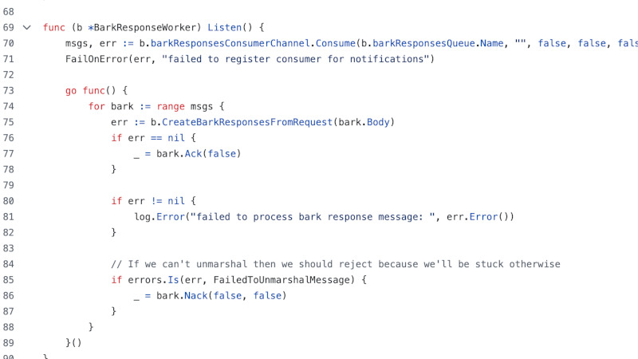

Current Projects
Old Projects

Bark
An app to help organise spontaneous meetups amongst friends. I built the prototype and infrastructure, deployed amongst friends, but is on hiatus. Would like to return to it at some point, maybe write a blog post about it.